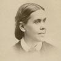

Site des livres d'Ellen White
 Ellen Gould White (26 novembre 1827 – 16 juillet 1915), née Harmon, est une chrétienne américaine dont le ministère contribua à fonder, avec Joseph Bates et James White (son mari), l'Église adventiste du septième jour. Principale inspiratrice du mouvement, elle fut une guide spirituelle, une revivaliste, une prédicatrice, une missionnaire et une réformatrice militant pour la vie familiale, l'éducation, la santé et une hygiène de vie holistique. Mais elle n'occupa jamais aucune position de direction dans l'Église adventiste. Au cours de ses 70 ans de ministère, Ellen White écrivit 26 livres et plus de 5 000 articles pour divers périodiques. Jusqu'à aujourd'hui, plus de 130 titres ont été publiés (en anglais), incluant de nombreuses compilations de ses 55 000 pages de manuscrits[1]. Son œuvre fut essentiellement consacrée à la spiritualité chrétienne, centrée principalement sur le second avènement du Christ. Elle écrivit sur des sujets touchant à la vie pratique chrétienne, l'évangélisation, l'éducation et la santé. Son œuvre et son engagement contribuèrent à l'organisation et à l'expansion mondiale de l'Église adventiste, à l'établissement de nombreux modes de diffusion du message du retour du Christ, et à la création d'un important réseau d'établissements scolaires, universitaires et médicaux dans le monde entier. Les adventistes attribuent une dimension prophétique à son ministère, estimant qu'elle eut environ 2 000 visions. Fidèle à l'esprit du protestantisme, Ellen White appela toujours ses lecteurs et ses auditeurs à enraciner leur foi sur le seul témoignage de la Bible
Mon nom est JOUONANG Mesmin.O.S, étudiant à l'université Adventiste Cosendai, j'aime l'informatique et suis vraiment passiionné pour cela, c'est une histoire d'amour qui a comencée je ne sais à quel momement, tout ce que je peux dire, c'est que j'aime ce que je fais, et j'en suis reconnaissant envers mon Dieu et envers un tonton, le seul en qui j'ai totalement confiance, qui me conduit par sa bonté Suprême, car il est mon berger qui me garde et qui m’aime, je parle ici de tonton Jésus, il est le meilleur, iil m'a toujours soutenu dans les moments difficile, et sa fidélité est pour moi une assurance et une certitude. Visitez ce site, et j'ai l'assurance que vous y sortirez avec quelque chose en plus